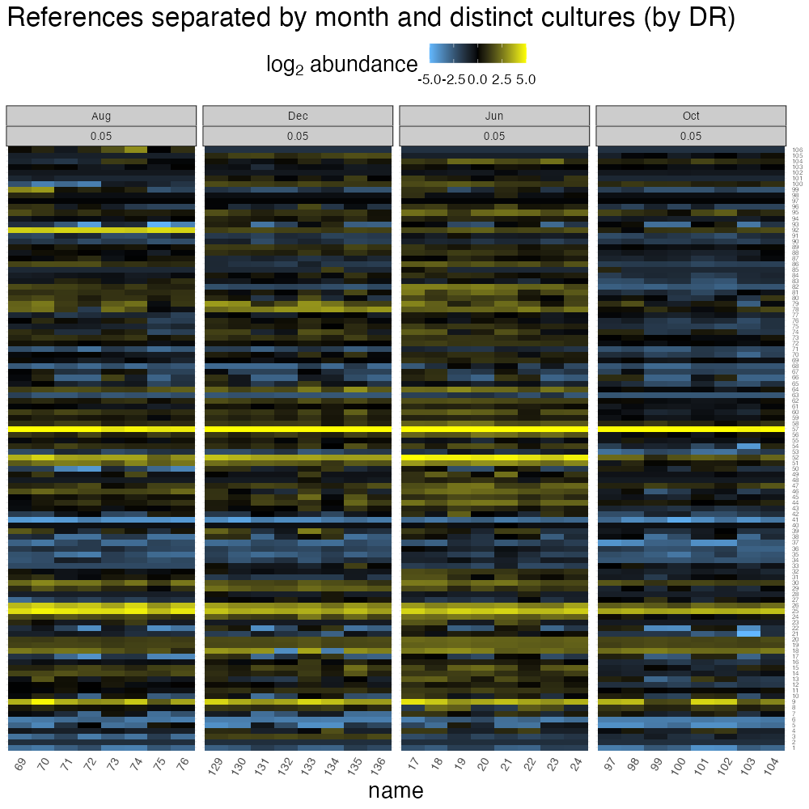
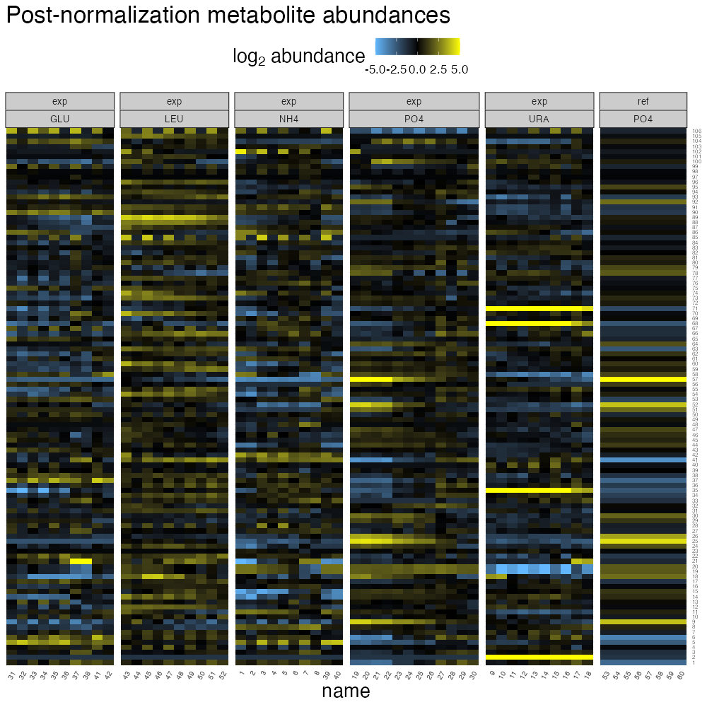
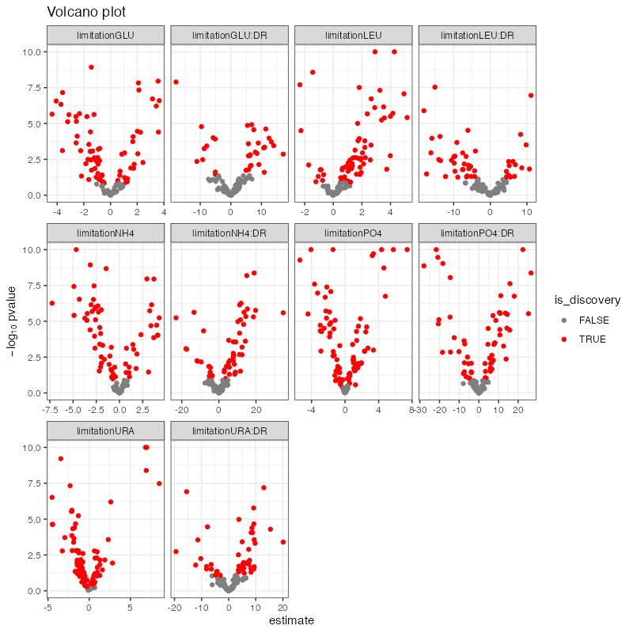
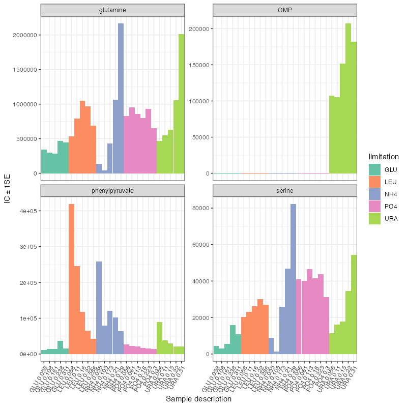

NPLUG.RmdThe NPLUG (Nitrogen, Phosphorous, Leucine, Uracil, or Glucose) experiment of Boer et al. 2010 explored the impacts of nutrient limitation and growth rate on the yeast’ metabolome.
Growth conditions in chemostat culture (indefinite exponential growth) followed a full factorial experimental design, such that the 25 primary experimental conditions contained all pairs of:
In total, 136 biological samples were collected. Two extraction methods were used on each culture (pellet- or filter-based) and each extraction method had two technical replicates. In addition, each batch of experimental cultures was paired with a phosphate-limited slow growth (DR = 0.05 hrs-1) reference culture to correct for month-to-month variability.
This study demonstrates the nature of nutrient limitation massively impacts the metabolome, with some growth-limiting metabolites becoming greatly depleted and other metabolites appearing to overflow. This vignette reproduces some of the major findings of this study using the standard functionality built into claman.
claman is meant to nicely interface with .mzrollDB SQLite databases produced by MAVEN, the Metabolomics Analysis and Visualization ENgine. Accordingly, we can start with a .mzrollDB file containing a stripped-down version of the NPLUG data, which bas been bundled with the claman package.
This database contains tables of peakgroups (ions with characteristic m/z and rt), samples, and peaks (measurements of peakgroups in each sample). It does not include meta-data about metabolites (such as metabolites’ pathways), nor samples (such as the experimental design), so this information will be added later.
mzroll_list <- process_mzroll(mzroll_db_path)| groupId | compoundName | smiles | adductName | tagString | mz | rt | compoundDB | searchTableName | label | peak_label | method_tag |
|---|---|---|---|---|---|---|---|---|---|---|---|
| 1 | Ribose-P | NA | NA | NA | NA | NA | NA | g | Ribose-P | ||
| 2 | OMP | NA | NA | NA | NA | NA | NA | g | OMP | ||
| 3 | 1,3-diphopshateglycerate | NA | NA | NA | NA | NA | NA | g | 1,3-diphopshateglycerate | ||
| 4 | 3-hydroxy-3-methylglutaryl-CoA | NA | NA | NA | NA | NA | NA | g | 3-hydroxy-3-methylglutaryl-CoA | ||
| 5 | 3-phosphoglycerate | NA | NA | NA | NA | NA | NA | g | 3-phosphoglycerate | ||
| 6 | 6-phospho-D-gluconate | NA | NA | NA | NA | NA | NA | g | 6-phospho-D-gluconate | ||
| 7 | acetyl-CoA | NA | NA | NA | NA | NA | NA | g | acetyl-CoA | ||
| 8 | aconitate | NA | NA | NA | NA | NA | NA | g | aconitate | ||
| 9 | adenosine | NA | NA | NA | NA | NA | NA | g | adenosine | ||
| 10 | ADP | NA | NA | NA | NA | NA | NA | g | ADP |
| sampleId | name | filename |
|---|---|---|
| 1 | NH4_0.055_filter_b | NA |
| 2 | NH4_0.055_filter_d | NA |
| 3 | NH4_0.055_pellet_a | NA |
| 4 | NH4_0.055_pellet_c | NA |
| 5 | NH4_0.173_filter_b | NA |
| 6 | NH4_0.173_filter_d | NA |
| 7 | NH4_0.173_pellet_a | NA |
| 8 | NH4_0.173_pellet_c | NA |
| 9 | NH4_0.210_filter_b | NA |
| 10 | NH4_0.210_filter_d | NA |
| groupId | sampleId | log2_abundance | centered_log2_abundance |
|---|---|---|---|
| 2 | 1 | 8.228819 | -1.2684248 |
| 4 | 1 | 8.228819 | -0.8160200 |
| 15 | 1 | 8.228819 | -4.5988785 |
| 25 | 1 | 8.228819 | -3.2270520 |
| 26 | 1 | 8.228819 | -2.2107806 |
| 30 | 1 | 8.228819 | -1.1796164 |
| 40 | 1 | 8.228819 | -0.3181364 |
| 51 | 1 | 8.228819 | -1.0992572 |
| 56 | 1 | 8.228819 | -0.4479950 |
| 57 | 1 | 8.228819 | -3.8019754 |
mzroll_list_augmented <- merge_samples_tbl(mzroll_list, nplug_samples, "sample_name")| sampleId | name | filename | samples_tbl_row | sample_name | month | replicate | DR | limitation | exp_ref | extraction | condition | reference |
|---|---|---|---|---|---|---|---|---|---|---|---|---|
| 1 | NH4_0.055_filter_b | NA | 1 | NH4_0.055_filter_b | Jun | B | 0.055 | NH4 | exp | filter | 1 | 53 |
| 2 | NH4_0.055_filter_d | NA | 2 | NH4_0.055_filter_d | Jun | D | 0.055 | NH4 | exp | filter | 1 | 53 |
| 3 | NH4_0.055_pellet_a | NA | 3 | NH4_0.055_pellet_a | Jun | A | 0.055 | NH4 | exp | pellet | 2 | 54 |
| 4 | NH4_0.055_pellet_c | NA | 4 | NH4_0.055_pellet_c | Jun | C | 0.055 | NH4 | exp | pellet | 2 | 54 |
| 5 | NH4_0.173_filter_b | NA | 5 | NH4_0.173_filter_b | Jun | B | 0.173 | NH4 | exp | filter | 3 | 53 |
mzroll_list_augmented <- merge_compounds_tbl(mzroll_list_augmented, nplug_compounds)| groupId | compoundName | smiles | adductName | tagString | mz | rt | compoundDB | searchTableName | label | peak_label | method_tag | pathway |
|---|---|---|---|---|---|---|---|---|---|---|---|---|
| 1 | Ribose-P | NA | NA | NA | NA | NA | NA | g | Ribose-P | Pentose Phosphate Pathway | ||
| 2 | OMP | NA | NA | NA | NA | NA | NA | g | OMP | Pyrimidines | ||
| 3 | 1,3-diphopshateglycerate | NA | NA | NA | NA | NA | NA | g | 1,3-diphopshateglycerate | Glycolysis | ||
| 4 | 3-hydroxy-3-methylglutaryl-CoA | NA | NA | NA | NA | NA | NA | g | 3-hydroxy-3-methylglutaryl-CoA | Lipid metabolism | ||
| 5 | 3-phosphoglycerate | NA | NA | NA | NA | NA | NA | g | 3-phosphoglycerate | Glycolysis |
Having loaded the dataset, we can take a quick look at the data using heatmaps.
The biological variables in the experimental design are limiting nutrient and dilution rate. To look at their influence in shaping the metabolome, we can separate limiting nutrients using facets and order samples based on dilution rate (this will happen naturally if we order alphabetically by sample name).
To make plots like this we can take advantage of the fact that mzroll_lists build on top of the romic triple_omic classes.
romic::plot_heatmap(
mzroll_list_augmented,
feature_var = "compoundName",
sample_var = "name",
value_var = "centered_log2_abundance",
change_threshold = 5
) + facet_grid(~ exp_ref + limitation, scales = "free_x", space = "free_x") +
ggtitle("Metabolites separated by limiting nutrients")From this plot, its clear that limiting nutrients have a strong role in shaping the metabolome, while dilution rate creates relatively smooth transitions as each limitation progresses from slow growth (left) to fast growth (right).
The technical variables in the experimental design are extraction method, month (which is likely associated with batch effects), and replication. Like the heatmap of limitation above, we can look at how extraction method and month shape the metabolome with heatmaps.
Since limiting nutrient has a major effect, we’ll want to account for it when looking extraction method’s impact on metabolome variability.
romic::plot_heatmap(
mzroll_list_augmented,
feature_var = "compoundName",
sample_var = "name",
value_var = "centered_log2_abundance",
change_threshold = 5
) + facet_grid(~ limitation + extraction, scales = "free_x", space = "free_x") +
ggtitle("Metabolites separated by extraction") +
theme(strip.text = element_text(size = 10))From this plot, there are clear, but often relatively minor effects of extraction method on metabolite abundances. Large differences in extraction efficiency are generally seen for nucleotides, where using a filter-based extraction results in greater signal than using pellets.
To look at month-effects, we can take advantage of the fact that in each month two biological replicate reference cultures were generated. These two cultures can be distinguished in the sample meta-data most easily by subtle differences in their dilution rate.
mzroll_list_augmented %>%
# only look at reference samples
romic::filter_tomic(
filter_type = "category",
filter_table = "samples",
filter_variable = "exp_ref",
filter_value = "ref"
) %>%
romic::plot_heatmap(
feature_var = "compoundName",
sample_var = "name",
value_var = "centered_log2_abundance",
change_threshold = 5
) + facet_grid(~ month + DR, scales = "free_x", space = "free_x") +
ggtitle("References separated by month and distinct cultures (by DR)") +
theme(strip.text = element_text(size = 10))
From this plot, the biological replicate reference cultures are nearly identical (that’s one reason why chemostats are awesome!) while there are subtle differences between months.
From the preliminary analysis, when normalizing this dataset to remove sources of technical variability (and thereby clarify the biological signal), we’ll want to account of month-to-month variability, extraction methodology, and technical replication.
To tackle these obstacles we will:
plot_compare_injection(
mzroll_list_augmented,
grouping_vars = "condition",
peak_quant_var = "centered_log2_abundance"
) + ggtitle("Comparison of injection technical replicates")
#> 3 sample variables will be dropped since they
#> - vary for the same grouping_vars:
#> - samples_tbl_row, sample_name, replicate
mzroll_list_distinct_conditions <- collapse_injections(
mzroll_list_augmented,
grouping_vars = "condition",
peak_quant_vars = c("log2_abundance", "centered_log2_abundance"),
collapse_fxn = "mean"
)
#> 3 sample variables will be dropped since they
#> - vary for the same grouping_vars:
#> - samples_tbl_row, sample_name, replicate
#> Warning: `summarise_each_()` was deprecated in dplyr 0.7.0.
#> Please use `across()` instead.
#> Warning: `funs_()` was deprecated in dplyr 0.7.0.
#> Please use `funs()` instead.
#> See vignette('programming') for more help
#> Warning: `funs()` was deprecated in dplyr 0.8.0.
#> Please use a list of either functions or lambdas:
#>
#> # Simple named list:
#> list(mean = mean, median = median)
#>
#> # Auto named with `tibble::lst()`:
#> tibble::lst(mean, median)
#>
#> # Using lambdas
#> list(~ mean(., trim = .2), ~ median(., na.rm = TRUE))| condition | filename | month | DR | limitation | exp_ref | extraction | reference | sampleId | name |
|---|---|---|---|---|---|---|---|---|---|
| 1 | NA | Jun | 0.055 | NH4 | exp | filter | 53 | 1 | NH4_0.055_filter_b |
| 2 | NA | Jun | 0.055 | NH4 | exp | pellet | 54 | 2 | NH4_0.055_pellet_a |
| 3 | NA | Jun | 0.173 | NH4 | exp | filter | 53 | 3 | NH4_0.173_filter_b |
| 4 | NA | Jun | 0.173 | NH4 | exp | pellet | 54 | 4 | NH4_0.173_pellet_a |
| 5 | NA | Jun | 0.210 | NH4 | exp | filter | 53 | 5 | NH4_0.210_filter_b |
| 6 | NA | Jun | 0.210 | NH4 | exp | pellet | 54 | 6 | NH4_0.210_pellet_a |
| 7 | NA | Jun | 0.290 | NH4 | exp | filter | 53 | 7 | NH4_0.290_filter_b |
| 8 | NA | Jun | 0.290 | NH4 | exp | pellet | 54 | 8 | NH4_0.290_pellet_a |
| 9 | NA | Jun | 0.056 | URA | exp | filter | 53 | 9 | URA_0.056_filter_b |
| 10 | NA | Jun | 0.056 | URA | exp | pellet | 54 | 10 | URA_0.056_pellet_a |
Since experimental cultures of the same limiting nutrient were generated simultaneously, limitation and the month-of-generation are confounded. Without correcting this confounding, some of the month effects would be interpreted as limitation-specific signals. To correct for this month-to-month variability in instrument performance, each experimental sample can be compared to common reference conditions. Since these cultures possess very similar biological signals, but should share the performance biases, contrasting each biological culture with a month-matched reference should remove this shared bias. In a similar fashion we can evaluate whether differences due to extraction methodology are resolved when we are comparing an experimental condition to its extraction-matched, month-matched reference.
mzroll_list_normalized <- normalize_peaks(
mzroll_list_distinct_conditions,
normalization_method = "reference sample",
quant_peak_varname = "log2_abundance",
norm_peak_varname = "normalized_log2_abundance",
batch_varnames = c("month", "extraction"),
reference_varname = "exp_ref",
reference_values = "ref"
) %>%
# having normalized by the common reference, we can re-center the data
# since slow-phosphate limited growth is not a biological reference.
romic::center_tomic(measurement_vars = "normalized_log2_abundance")Have normalized for month and extraction method, we can look at the results as another heatmap.
romic::plot_heatmap(
mzroll_list_normalized,
feature_var = "compoundName",
sample_var = "name",
value_var = "normalized_log2_abundance",
change_threshold = 5,
cluster_dim = "rows"
) + facet_grid(~ exp_ref + limitation, scales = "free_x", space = "free_x") +
ggtitle("Post-normalization metabolite abundances") +
theme(strip.text = element_text(size = 10))
From this visualization, we can note that the reference chemostats are uniform for a given peakgroup (these were set to zero during normalization and then offset during re-centering). There does seem to be an issue with the attempted extraction normalization though; having compared each experimental sample to its extraction method matched reference, meaningful differences relative abundance associated with extraction remain.
While we could try to make use of data from both extraction methods, as they did in the original paper, due to the inconsistent extraction efficiency, I think its better to just retain the higher-signal filter-extraction samples. At this point we can also discard the reference samples since they’re no longer needed.
final_processed_data <- mzroll_list_normalized %>%
# retain just experimental samples
romic::filter_tomic(
filter_type = "category",
filter_table = "samples",
filter_variable = "exp_ref",
filter_value = "exp"
) %>%
# retain only filter extraction
romic::filter_tomic(
filter_type = "category",
filter_table = "samples",
filter_variable = "extraction",
filter_value = "filter"
)
# clean-up sample data
renamed_samples <- final_processed_data$samples %>%
select(sampleId, limitation, DR) %>%
mutate(name = glue::glue(
"{stringr::str_sub(limitation, 1, 1)}{round(DR,2)}"
)) %>%
group_by(name) %>%
mutate(
name = case_when(n() == 1 ~ name,
TRUE ~ paste0(name, "-", 1:n()))
) %>%
ungroup()
final_processed_data <- romic::update_tomic(
final_processed_data,
renamed_samples
)
romic::plot_heatmap(
final_processed_data,
feature_var = "compoundName",
sample_var = "name",
value_var = "normalized_log2_abundance",
change_threshold = 5,
cluster_dim = "rows"
) + facet_grid(~ limitation, scales = "free_x", space = "free_x") +
ggtitle("Final processed metabolite abundances across 25 growth conditions") +
theme(strip.text = element_text(size = 10))
#> Warning in if (class(distinct_samples[[sample_var]]) %in% c("factor",
#> "ordered")) {: the condition has length > 1 and only the first element will be
#> usedHaving generated a processed dataset, we can already see some patterns clearly by looking at the heatmap, such as bottlenecking of pyrimidine biosynthesis during uracil limitation, amino acid accumulation during leucine limitation, and TCA up-regulation during ammonium limitation. Its also apparent that many of the strongest metabolomic alterations are observed at slow growth rates, while these there are relatively smooth transitions back to a normalish-metabolome as cell growth more quickly. To quantitatively summarize trends like these, its helpful to carryout differential abundance testing. But, before we proceed we should determine the type of model we need to fit by interpreting the major sources of variation in our dataset in light of the experimental design.
Our analysis thus far has already corrected for major sources of variation in this original dataset, such as month-to-month variation and differences in extraction methodology. If we hadn’t controlled for those factors by this point, we would want to create visualizations which appropriately identify major unaccounted for sources of variation. Similarly, this will help us to determine how we should represent our experimental design as an appropriate hypothesis test.
Two visualizations that are particularly useful for EDA are heatmaps (I’m sure you’ve seen enough of those), and principal components plots which overlay elements of the experimental design on the leading principal components.
samples_with_pcs <- final_processed_data %>%
romic::add_pca_loadings(value_var = "normalized_log2_abundance", npcs = 5)
romic::plot_bivariate(
samples_with_pcs$samples,
"PC1",
"PC2",
color_var = "limitation"
) + ggtitle("Top principal components driving metabolomic variation")One plot doesn’t quite cut it here. Luckily, romic has some powerful methods for shiny-based interactive analysis that we can leverage here to quickly make plots like these.
romic::app_flow(samples_with_pcs)
romic::app_heatmap(final_processed_data %>% romic::triple_to_tidy())From the results thus far, we’ve seen that limitation greatly impacts the metabolome, as does growth rate which tends to have a limitation-specific trend. Whatever model we fit should account for these features of the data. The actual model we fit will depend on the question we want to ask of the data. For example, we could be interested in just finding metabolites impacted by nutrient, or those that are perturbed by a specific nutrient. To keep things manageable, I’ll explore how nitrogen-limitation alters the metatbolome.
To ask this, we can formulate a linear regression of the form:
\[ y^{\text{normalized}} \sim \text{lim} + \text{lim} \cdot \text{DR} \]
regression_significance <- diffex_mzroll(
final_processed_data,
"normalized_log2_abundance",
"limitation + limitation:DR + 0"
)
#> Warning in .f(.x[[i]], ...): q-value calculation initially failed due to too many small p-values
#> but claman was able to recover results
plot_pvalues(regression_significance)
plot_volcano(regression_significance)
n_lim_signif <- regression_significance %>%
filter(term == "limitationNH4") %>%
arrange(qvalue) %>%
left_join(
final_processed_data$features %>%
select(groupId, peak_label),
by = "groupId")| term | groupId | estimate | std.error | statistic | p.value | qvalue | diffex_label | peak_label |
|---|---|---|---|---|---|---|---|---|
| limitationNH4 | 44 | -4.653987 | 0.3092707 | -15.048264 | 0e+00 | 0.0e+00 | -15.048 *** | glutamine |
| limitationNH4 | 81 | -3.148848 | 0.2523321 | -12.478986 | 0e+00 | 0.0e+00 | -12.479 *** | serine |
| limitationNH4 | 2 | -1.437548 | 0.1200230 | -11.977270 | 0e+00 | 0.0e+00 | -11.977 *** | OMP |
| limitationNH4 | 74 | 2.950303 | 0.2765627 | 10.667753 | 0e+00 | 1.0e-07 | 10.668 *** | phenylpyruvate |
| limitationNH4 | 86 | 3.706008 | 0.3477182 | 10.658078 | 0e+00 | 1.0e-07 | 10.658 *** | trehalose/sucrose |
| limitationNH4 | 14 | -4.904499 | 0.5012941 | -9.783677 | 0e+00 | 3.0e-07 | -9.784 *** | arginine |
| limitationNH4 | 59 | -2.738652 | 0.2782964 | -9.840773 | 0e+00 | 3.0e-07 | -9.841 *** | leucine/isoleucine |
| limitationNH4 | 54 | -4.324299 | 0.5146966 | -8.401647 | 3e-07 | 1.9e-06 | -8.402 *** | histidine |
| limitationNH4 | 88 | -2.803336 | 0.3345180 | -8.380224 | 3e-07 | 1.9e-06 | -8.38 *** | tryptophan |
| limitationNH4 | 21 | -7.261097 | 0.9072313 | -8.003578 | 6e-07 | 3.0e-06 | -8.004 *** | citrulline |
plot_barplot(
mzroll_list = final_processed_data,
groupIds = n_lim_signif$groupId[1:4],
grouping_vars = c("limitation", "DR"),
value_var = "normalized_log2_abundance",
fill_var = "limitation"
) + scale_fill_brewer(palette = "Set2")
pathway_nest <- final_processed_data$features %>%
dplyr::select(groupId, pathway) %>%
tidyr::nest(pathway_members = groupId)
pathway_list <- purrr::map(
pathway_nest$pathway_members,
function(x) {
as.character(x$groupId)
}
)
names(pathway_list) <- pathway_nest$pathway
enrichments <- find_pathway_enrichments(
final_processed_data,
regression_significance,
pathway_list,
test_absolute_effects = FALSE
)| term | pathway | pval | padj | ES | NES | size |
|---|---|---|---|---|---|---|
| limitationNH4:DR | Amino Acids | 0.0000001 | 0.0000006 | 0.8716301 | 2.108136 | 18 |
| limitationNH4 | Amino Acids | 0.0000023 | 0.0000226 | -0.8381768 | -2.043089 | 18 |
| limitationNH4 | TCA cycle | 0.0007502 | 0.0037511 | 0.8410193 | 2.017484 | 9 |
| limitationLEU | Amino Acids | 0.0007378 | 0.0073784 | 0.7185995 | 1.773362 | 18 |
| limitationNH4:DR | TCA cycle | 0.0025193 | 0.0125966 | -0.7638691 | -1.987874 | 9 |
| limitationNH4 | Glycolysis | 0.0091217 | 0.0304055 | 0.7275549 | 1.886448 | 11 |
| limitationPO4 | Purine Synthesis | 0.0040686 | 0.0406858 | 0.7323962 | 1.738962 | 12 |
| limitationNH4:DR | Purine Synthesis | 0.0193462 | 0.0644873 | -0.5833708 | -1.699125 | 12 |
| limitationPO4:DR | Glycolysis | 0.0159305 | 0.0796526 | 0.7327704 | 1.652984 | 11 |
| limitationPO4:DR | Purine Synthesis | 0.0128088 | 0.0796526 | -0.7096962 | -1.692692 | 12 |
# see specific pathway enrichments
ranked_nitrogen_enrichments <- enrichments$enrichment_table %>%
arrange(padj) %>%
filter(term == "limitationNH4")
ranked_nitrogen_enrichments$enrichment_plot[[1]] +
ggtitle(
"Amino acids are depleted during nitrogen limitation",
"Note that the x-axis is ranks, and negative values have higher ranks"
) While self-contained reproducible notebooks like this vignette are an ideal way to share results with collaborators, normalized data and analysis artifacts can easily be exported as well. This is done using romic functions: export_tomic_as_tidy, export_tomic_as_triple, and export_tomic_as_wide. These three exports write the same comprehensive summaries of an mzroll to disk just in different formats. Before exporting, we may also want to include additional feature and sample attributes that have not been directly incorporated into the mzroll_list such as summaries of differential expression.
wide_stats <- regression_significance %>%
select(groupId, term, diffex_label) %>%
tidyr::spread(term, diffex_label)
final_processed_data <- romic::update_tomic(
final_processed_data,
final_processed_data$features %>%
left_join(wide_stats, by = "groupId")
)| groupId | compoundName | smiles | adductName | tagString | mz | rt | compoundDB | searchTableName | label | peak_label | method_tag | pathway | limitationGLU | limitationGLU:DR | limitationLEU | limitationLEU:DR | limitationNH4 | limitationNH4:DR | limitationPO4 | limitationPO4:DR | limitationURA | limitationURA:DR |
|---|---|---|---|---|---|---|---|---|---|---|---|---|---|---|---|---|---|---|---|---|---|---|
| 1 | Ribose-P | NA | NA | NA | NA | NA | NA | g | Ribose-P | Pentose Phosphate Pathway | 1.396 | 3.737 ** | 1.369 | 2.986 * | 1.052 | 3.058 * | -15.989 *** | 15.46 *** | -2.954 ** | 5.917 *** | ||
| 2 | OMP | NA | NA | NA | NA | NA | NA | g | OMP | Pyrimidines | -12.467 *** | 0 | -11.782 *** | 0 | -11.977 *** | 0 | -14.86 *** | 0 | 59.939 *** | 6.303 *** | ||
| 3 | 1,3-diphopshateglycerate | NA | NA | NA | NA | NA | NA | g | 1,3-diphopshateglycerate | Glycolysis | -0.016 | 1.49 | -1.785 * | 2.223 * | -1.722 * | 3.465 ** | -5.349 *** | 5.63 *** | -1.417 * | 2.486 * | ||
| 4 | 3-hydroxy-3-methylglutaryl-CoA | NA | NA | NA | NA | NA | NA | g | 3-hydroxy-3-methylglutaryl-CoA | Lipid metabolism | 1.196 | -0.454 | 2.859 * | -0.623 | -3.007 ** | 0.425 | 0.123 | -0.382 | 3.087 ** | -3.193 * | ||
| 5 | 3-phosphoglycerate | NA | NA | NA | NA | NA | NA | g | 3-phosphoglycerate | Glycolysis | 8.485 *** | -2.293 * | -1.218 | 1.438 | 7.28 *** | 0.044 | -9.049 *** | 5.192 *** | -4.438 *** | 2.813 * | ||
| 6 | 6-phospho-D-gluconate | NA | NA | NA | NA | NA | NA | g | 6-phospho-D-gluconate | Pentose Phosphate Pathway | 3.228 ** | 0.037 | 1.28 | 0.457 | -0.012 | 1.148 | -6.988 *** | 7.014 *** | -0.108 | 2.115 * | ||
| 7 | acetyl-CoA | NA | NA | NA | NA | NA | NA | g | acetyl-CoA | TCA cycle | -1.912 * | 2.686 * | 2.951 * | -0.105 | -0.565 | 0.675 | -1.405 * | 1.791 * | 3.085 ** | -0.579 | ||
| 8 | aconitate | NA | NA | NA | NA | NA | NA | g | aconitate | TCA cycle | -1.687 * | -2.015 | -0.027 | -2.752 * | 2.702 * | 1.761 * | 3.219 ** | -2.971 * | -1.366 * | 2.523 * | ||
| 9 | adenosine | NA | NA | NA | NA | NA | NA | g | adenosine | Purine Synthesis | -8.111 *** | 0.558 | 1.565 | -5.245 ** | -4.461 *** | -1.354 | 12.063 *** | -6.701 *** | 0.416 | -2.734 * | ||
| 10 | ADP | NA | NA | NA | NA | NA | NA | g | ADP | Energetics | -2.185 * | 0.629 | 1.621 * | -1.196 | 0.679 | -0.84 | -2.611 ** | 2.362 * | 1.191 * | -0.903 |
romic::export_tomic_as_tidy(
final_processed_data,
dir_path = "/tmp",
name_preamble = "nplug"
)